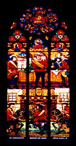

This bar is weird, partly because of the decor, and partly because of the uncanny way that they've managed to recreate a doctor's waiting room atmosphere, without it looking like that at all. The decor is imaginative: there are a couple of stylised trees inside, each with it's own lighting.
I wonder if the look of the place is all too much for people here, or whether it's the back-street location that make this place completely deserted. This place is certainly not my thing, despite the interior design ideas, because the comfy armchairs that I saw through the window just turned out to be wicker chairs.
La Crêperie, Grünangergasse
The waiter led us through a maze of rooms before we got to our table; I'm not sure that I can find my way back again. Each room is differently decorated, all in a rich cosy style with dim lighting, heavy curtains, candles and even a fireplace in our 'red room'. Most relaxing.
This place serves pancakes, believe it or not, but they're not very French. My salmon, spinach, cheese and mushroom pancake came with vegetables and a fruity tomato sauce that was a bit like a hot version of salsa. This lack of 'authenticity' is natural and good: if you went to an Austrian restaurant in London and got a normal Wiener Schnitzel you probably wouldn't be too impressed. Similarly, traditional French pancakes would seem a bit boring here. Anyway, then I wouldn't have got the delicious meal that I have just got.
I have now learned how hungry I would need to be to need a starter. I'm not and I don't. The portions here are typically big. In any case I'll be coming back here, to try some more of the pleasantly interesting menu and maybe even to try one of the other rooms.
 Kix Bar, BäckerstrasseAnother weird bar, this would be as in as hell if it were in Covent Garden. The high walls have a minimalist pastel shades design that plays tricks with the perspective, especially after one of their high-price high-alcohol cocktails. Thankfully the minimalism of the decor doesn't extend to the cocktail menu, which is pretty extensive.
My daiquiri was excellent - it was only the heavy smoke that made us leave.
Zum Kuchldragoner, SeitenstrasseThis is better - one of those places that has a pub atmosphere and pub crowd, but with a food menu and white tablecloths. Upstairs here is nice and quiet, and has candles on the tables. Just the thing for a quiet pint, which is just what I'm after.
While I swig my beer, my friend is drinking weisse gesprizter - three parts fizzy mineral water and about one part white wine. It's the ultimate girlie drink. (I had one two days later - it's very pleasant and not too sweet. It would make an excellent sugar-free alternative to lemonade in the summer: I look forward to trying that.)
{kind=link}